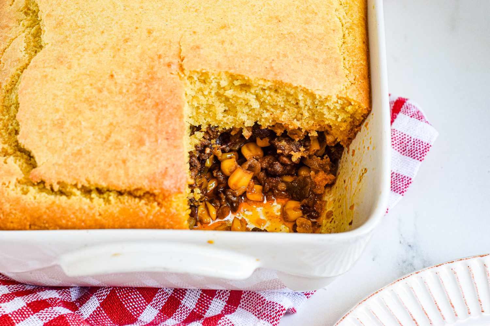

Hot Tamale Pie

Description
This is a Hot Tamale Pie recipe.
Ingedients
- Diced Onion
- 3 lbs ground Beef
- 2 small cans tomato paste
- 4 cans water
- 3 cans corn
- salt
- pepper
- chili powder
- Instant cornbread mix
Steps
- Saute onions in a cast iron skillet until fragrant and translucent
- Add ground beef to the pan
- Once the ground beef is cooked thouroughly, add tomato paste and water. Mix well.
- Add corn. Mix well.
- Simmer until thickened
- Prepare cornbreak mix
- Pour batter ontop, and place in oven at 400 degrees for 25-30 minutes or until cornbread is cooked